Fino a Sabato piogge, migliora da Domenica
Perturbazione in transito sull'Italia. Venerdì e WEEKEND: un fronte perturbato sospinto da intensi venti di Libeccio e Scirocco attraverserà l'Italia interessando il Nord e le regioni tirreniche. Sabato e Domenica le piogge interesseranno il versante Adriatico centro meridionale e localmente il resto del Sud, tornerà il bel tempo al Nord. PROSSIMA SETTIMANA: lunedì, piogge al Nordovest. Da martedì ingresso di forti venti di Grecale e maltempo su medio e basso Adriatico, sole pieno al Nord e sulle Tirreniche.
 Ingrandisci mappaVedi mappa originale
Ingrandisci mappaVedi mappa originale
Le previsioni in Italia · 8–14 ottobre 2026
A cura di Antonio Sanò
Meteo per Giovedì 8 Ottobre 2026
Perturbazione in transito. La giornata sarà contrassegnata da un diffuso maltempo al Nord, dalla Lombardia al Triveneto e sul Centro-Sud tirrenico dalla Toscana alla Campania centro settentrionale. Sono attese piogge localmente intense e qualche temporale. Piovaschi e schiarite soleggiate in Emilia Romagna, sulle Adriatiche e sul resto del Sud. Mari molto mossi, venti sostenuti da sud.
Meteo per Venerdì 9 Ottobre 2026
Una perturbazione interessa il Paese. La giornata sarà contrassegnata da condizioni di tempo instabile o molto instabile al Nordest e al Sud, specie sul lato tirrenico. Attesi rovesci di pioggia localmente alternati a schiarite o pause asciutte. Non mancheranno dei temporali, specie al Sud. Piovaschi e schiarite soleggiate sul resto delle regioni. Venti moderati, mari mossi.
Meteo per Sabato 10 Ottobre 2026
La pressione aumenta a partire dal Nord, una perturbazione collegata a un centro depressionario è in azione al Centro-Sud. La giornata sarà contraddistinta da un cielo poco o parzialmente nuvoloso al Nord e sui settori tirrenici. Sarà molto instabile con rovesci e qualche temporale sulle regioni adriatiche centro meridionali, al Sud e in Sicilia. Venti a rotazione ciclonica. Clima mite.
Meteo per Domenica 11 Ottobre 2026
Pressione in aumento. Giornata con cielo nuvoloso o a tratti molto nuvoloso. Ci saranno ancora piogge su Molise, Puglia, coste tirreniche di Calabria e Sicilia.
Meteo per Lunedì 12 Ottobre 2026
Pressione in lento aumento. Giornata con cielo nuvoloso o molto nuvoloso. Al mattino potrà piovere al Nordovest e locali piogge potranno interessare anche i rilievi del Sud.
Meteo per Martedì 13 Ottobre 2026
Anticiclone sull'Italia, ma soffiano venti da est. Calo termico notturno. Molte nubi con locali piogge sulle Adriatiche e sul basso Tirreno.
Meteo per Mercoledì 14 Ottobre 2026
Venti da est. Giornata in gran parte stabile, ultime precipitazioni interesseranno la fascia adriatica meridionali e localmente i settori ionici.
News Meteo
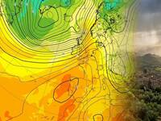
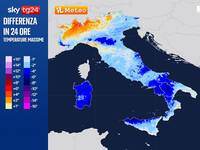
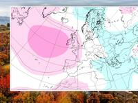
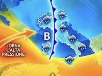
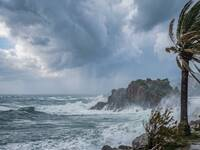
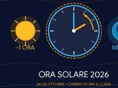
News Extra
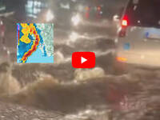
Le mappe acquisite
Tutte le mappe dell’edizione acquisita.
Le risorse della Home sono conservate come acquisite. La fonte non pubblica una data specifica per ciascuna di queste mappe.

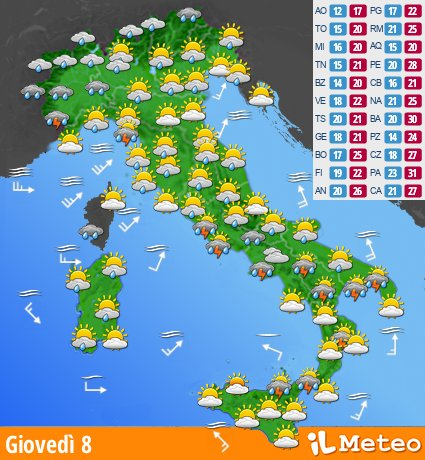
Ingrandisci mappa
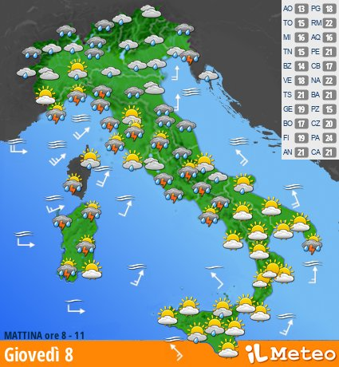
Ingrandisci mappa
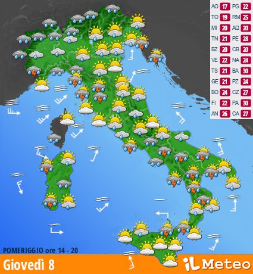
Ingrandisci mappa
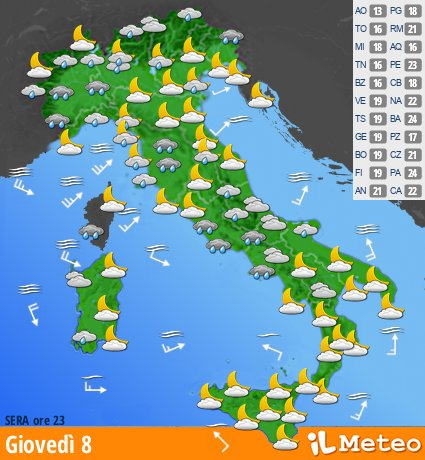
Ingrandisci mappa
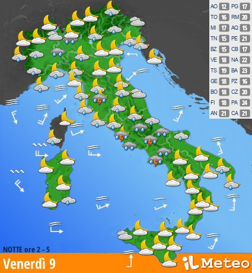
Ingrandisci mappa
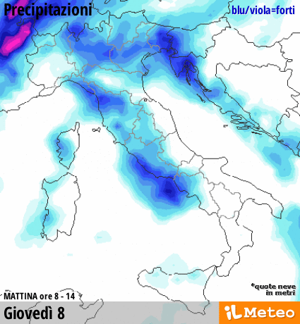
Ingrandisci mappa
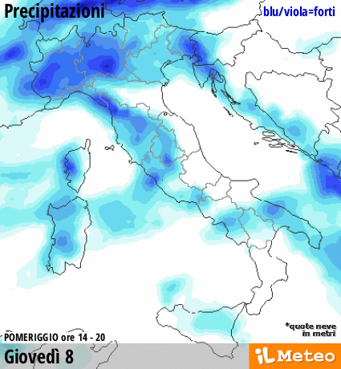
Ingrandisci mappa
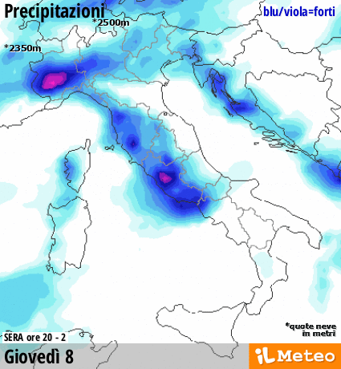
Ingrandisci mappa
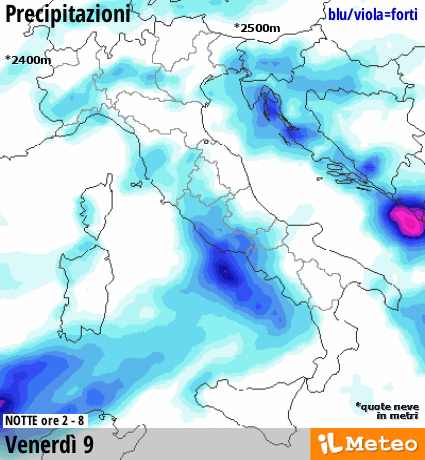
Ingrandisci mappa
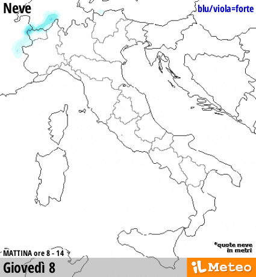
Ingrandisci mappa
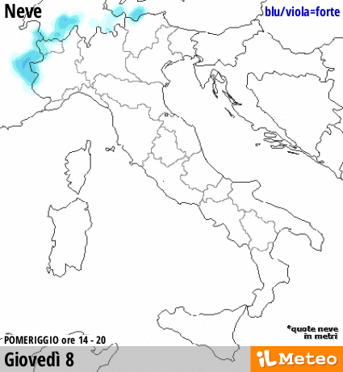
Ingrandisci mappa
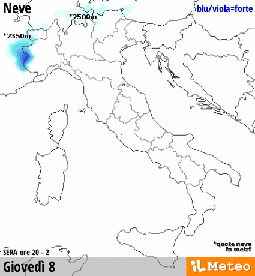
Ingrandisci mappa
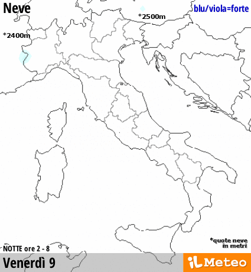
Ingrandisci mappa
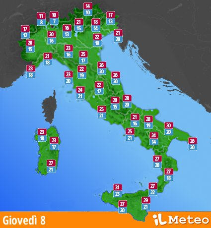
Ingrandisci mappa
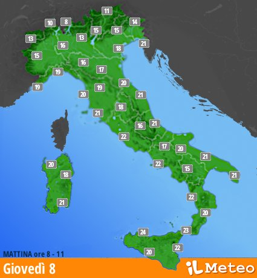
Ingrandisci mappa
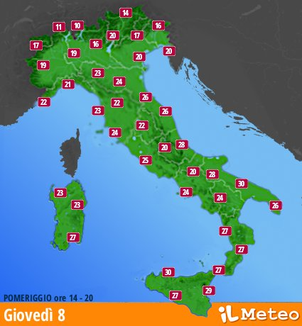
Ingrandisci mappa
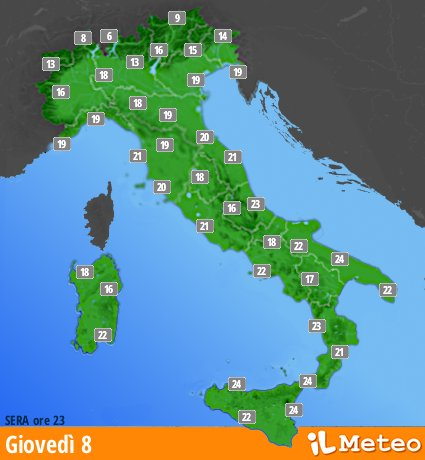
Ingrandisci mappa

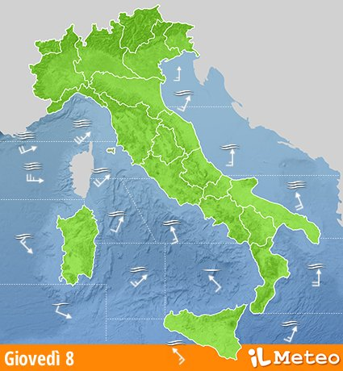
Ingrandisci mappa

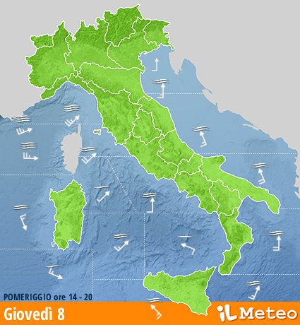
Ingrandisci mappa

Le mappe dei giorni seguenti

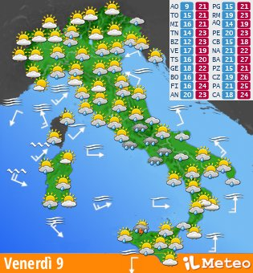
Ingrandisci mappa
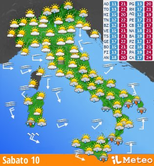
Ingrandisci mappa
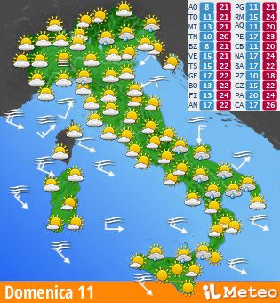
Ingrandisci mappa
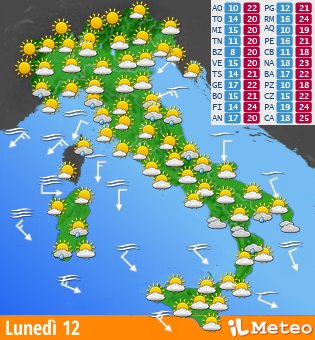
Ingrandisci mappaRadar · 8 ottobre 2026
Radar non disponibile in questa copia.
Le immagini acquisite della mappa base contengono messaggi di accesso bloccato. Non è disponibile una rappresentazione geografica utilizzabile.
Ora mostrata nella fonte: 08/10/2026, 19:20:00 · previsione. Le risorse originali e le attribuzioni restano conservate nell’acquisizione.
Video meteo
Giovedì 08
Video remoto non acquisito nella copia locale.
Altri servizi iLMeteo
I servizi oltre Home, Milano e Italia domani sono collegamenti al sito ufficiale oppure voci non disponibili nella copia. La disponibilità è indicata accanto a ogni voce.
Previsioni
- Previsioni · sito ufficiale
- Meteo a 3 e 7 Giorni · sito ufficiale
- 15 Giorni · sito ufficiale
- 30 Giorni · sito ufficiale
- Meteo Italia · sito ufficiale
- Meteo Europa · sito ufficiale
- Meteo Mondo · sito ufficiale
- Meteo Record · sito ufficiale
- Carte del Tempo · sito ufficiale
- Previsioni Stagionali · sito ufficiale
- Qualità dell'aria · sito ufficiale
- Pollini · sito ufficiale
- Bollettino Neve · sito ufficiale
- Bollettino Mari · sito ufficiale
Situazione
Mappe
- Mappe · sito ufficiale
- Mappe Meteo · sito ufficiale
- Venti · sito ufficiale
- Mari · sito ufficiale
- ETA 10Km · sito ufficiale
- ETA 5Km HiRes · sito ufficiale
- WRF · sito ufficiale
- ETA Italia Grecia · sito ufficiale
- ETA Central Europe · sito ufficiale
- ETA South Europe · sito ufficiale
- GFS Europe · sito ufficiale
- Ensemble Europe · sito ufficiale
- Altre Mappe · sito ufficiale
Venti e Mari
News e Video
Utilità
- Utilità
- Webcam · sito ufficiale
- Meteo Record · sito ufficiale
- Terremoto · sito ufficiale
- Glossario Meteo · sito ufficiale
- Report Eventi Meteo · sito ufficiale
- Indice Vivibilità Climatica · sito ufficiale
- Rapporto sul Clima · sito ufficiale
- Didattica Meteo · sito ufficiale
- Maratona dles Dolomites · sito ufficiale
Viabilità
Contatti
- Contatti · sito ufficiale
- Chi Siamo · sito ufficiale
- Come Lavoriamo · sito ufficiale
- Dove Siamo · sito ufficiale
- Contattaci · sito ufficiale
- Business · sito ufficiale
- Developer · sito ufficiale
- Stampa · sito ufficiale
- Dicono di Noi · sito ufficiale
- Privacy e Cookie Policy · sito ufficiale
- Termini e Condizioni d'uso · sito ufficiale
- Consensi GDPR · sito ufficiale
- Accessibilità · sito ufficiale
Elenchi di località, aree e modelli della fonte
Nazioni europee
Elenco della fonte Home. Le pagine delle altre località e dei modelli non sono acquisite.
- Albania
- Andorra
- Austria
- Belgio
- Bielorussia
- Bosnia
- Bouvet Island
- Bulgaria
- Croazia
- Danimarca
- Estonia
- Finlandia
- Francia
- Georgia del Sud e isole Sandwich
- Germania
- Grecia
- Guernsey
- Irlanda
- Islanda
- Isola Aland
- Isola di Man
- Isole Faroe
- Italia
- Jersey
- Kosovo
- Lettonia
- Liechtenstein
- Lituania
- Lussemburgo
- Macedonia
- Malta
- Moldova
- Monaco
- Montenegro
- Norvegia
- Olanda
- Polonia
- Portogallo
- Regno Unito
- Repubblica Ceca
- Romania
- Russia
- San Marino
- Serbia
- Slovacchia
- Slovenia
- Spagna
- Svalbard e Jan Mayen
- Svezia
- Svizzera
- Territori Meridionali Francesi
- Territorio Britannico dell'Oceano Indiano
- Turchia
- Ucraina
- Ungheria
- Vaticano
Zone del mondo
Elenco della fonte Home. Le pagine delle altre località e dei modelli non sono acquisite.
- Africa
- America
- Asia
- Europa
- Oceania
Collegamenti e provenienza dell’edizione
Gli elenchi conservano le destinazioni e le etichette dei contenuti acquisiti. Le voci senza destinazione utilizzabile sono indicate come non disponibili.
Collegamenti di fonte · Home
- Previsioni · sito ufficiale
- Meteo a 3 e 7 Giorni · sito ufficiale
- 15 Giorni · sito ufficiale
- 30 Giorni · sito ufficiale
- Meteo Italia · sito ufficiale
- Meteo Europa · sito ufficiale
- Meteo Mondo · sito ufficiale
- Meteo Record · sito ufficiale
- Carte del Tempo · sito ufficiale
- Previsioni Stagionali · sito ufficiale
- Qualità dell'aria · sito ufficiale
- Pollini · sito ufficiale
- Bollettino Neve · sito ufficiale
- Bollettino Mari · sito ufficiale
- Situazione · sito ufficiale
- Radar · sito ufficiale
- Immagini Satellitari · sito ufficiale
- Dati in Tempo Reale · sito ufficiale
- Segnalazioni · sito ufficiale
- Fulmini · sito ufficiale
- Radiosondaggi · sito ufficiale
- Dati Climatici · sito ufficiale
- Archivio Meteo · sito ufficiale
- Mappe · sito ufficiale
- Mappe Meteo · sito ufficiale
- Venti · sito ufficiale
- Mari · sito ufficiale
- ETA 10Km · sito ufficiale
- ETA 5Km HiRes · sito ufficiale
- WRF · sito ufficiale
- ETA Italia Grecia · sito ufficiale
- ETA Central Europe · sito ufficiale
- ETA South Europe · sito ufficiale
- GFS Europe · sito ufficiale
- Ensemble Europe · sito ufficiale
- Altre Mappe · sito ufficiale
- Neve · sito ufficiale
- Mappe Neve · sito ufficiale
- Venti e Mari · sito ufficiale
- Meteo Città Marine · sito ufficiale
- Venti fino a 7 Giorni · sito ufficiale
- Mari fino a 5 Giorni · sito ufficiale
- Mappe Venti · sito ufficiale
- Surf · sito ufficiale
- News e Video · sito ufficiale
- Notizie · sito ufficiale
- Video Meteo · sito ufficiale
- Video Oggi · sito ufficiale
- Video Domani · sito ufficiale
- Utilità
- Webcam · sito ufficiale
- Terremoto · sito ufficiale
- Glossario Meteo · sito ufficiale
- Report Eventi Meteo · sito ufficiale
- Indice Vivibilità Climatica · sito ufficiale
- Rapporto sul Clima · sito ufficiale
- Didattica Meteo · sito ufficiale
- Maratona dles Dolomites · sito ufficiale
- Viabilità · sito ufficiale
- Meteo Autostrade · sito ufficiale
- Traffico e Viabilità · sito ufficiale
- Meteo Aeroporti · sito ufficiale
- Percorsi e Itinerari · sito ufficiale
- Contatti · sito ufficiale
- Chi Siamo · sito ufficiale
- Come Lavoriamo · sito ufficiale
- Dove Siamo · sito ufficiale
- Contattaci · sito ufficiale
- Business · sito ufficiale
- Developer · sito ufficiale
- Stampa · sito ufficiale
- Dicono di Noi · sito ufficiale
- Privacy e Cookie Policy · sito ufficiale
- Termini e Condizioni d'uso · sito ufficiale
- Consensi GDPR · sito ufficiale
- Accessibilità · sito ufficiale
- Home
- Previsioni Meteo · sito ufficiale
- Situazione Meteo · sito ufficiale
- iLMeteo - Home Page
- Aosta · sito ufficiale
- Bologna · sito ufficiale
- Bolzano · sito ufficiale
- Genova · sito ufficiale
- Milano
- Torino · sito ufficiale
- Trento · sito ufficiale
- Trieste · sito ufficiale
- Venezia · sito ufficiale
- Ancona · sito ufficiale
- Campobasso · sito ufficiale
- Firenze · sito ufficiale
- L'Aquila · sito ufficiale
- Perugia · sito ufficiale
- Roma · sito ufficiale
- Bari · sito ufficiale
- Cagliari · sito ufficiale
- Catanzaro · sito ufficiale
- Napoli · sito ufficiale
- Palermo · sito ufficiale
- Potenza · sito ufficiale
- Londra · sito ufficiale
- Madrid · sito ufficiale
- Parigi · sito ufficiale
- Berlino · sito ufficiale
- Tutta l'Europa · sito ufficiale
- New York · sito ufficiale
- Cairo · sito ufficiale
- San Paolo · sito ufficiale
- Tokyo · sito ufficiale
- Tutto il Mondo · sito ufficiale
- Indietro
- Avanti
- Collegamento di fonte · sito ufficiale
https://twitter.com/share - PRIMA PAGINA ore 19:56 Meteo weekend: Sabato ancora piogge localmente battenti al Centro-Sud, Domenica più stabile. Le previsioni · sito ufficiale
- Protezione Civile Nazionale: allerta meteo arancione in Campania e Lazio, gialla in 14 regioni. Il bollettino · sito ufficiale
- Meteo prossima settimana: avvio ancora con piogge e vento, dal 15 Ottobre temporanea alta pressione. Tendenza · sito ufficiale
- Meteo: calo termico in atto, Venerdì 9 Ottobre ulteriore diminuzione di 5-6°C al Centro-Sud [mappa] · sito ufficiale
- Meteo: da metà Ottobre blocco atmosferico in Europa; instabile su Adriatiche e Sud, mite al Nord. Proiezioni · sito ufficiale
- Meteo, perturbazioni in transito: piogge e locali temporali, calo termico, migliora da Domenica [parla Tedici] · sito ufficiale
- Meteo: prima fase ventosa autunnale tra l'8 e il 9 Ottobre con raffiche a 80-90 km/h e mareggiate [mappe] · sito ufficiale
- Ora solare 2026: quando torna, l'impatto sul meteo e il punto sull'abolizione · sito ufficiale
- Generale · sito ufficiale
- Oggi · sito ufficiale
- Oggi · sito ufficiale
- Domani
- Dopodomani · sito ufficiale
- Domenica 11 · sito ufficiale
- Lunedì 12 · sito ufficiale
- Martedì 13 · sito ufficiale
- Mercoledì 14 · sito ufficiale
- Segnala il tempo nella tua città · sito ufficiale
- Tempo
- Precipitazioni
- Neve
- Temperature
- Venti-Mari
- Radar
- Giornata
- Mattina
- Pomeriggio
- Sera
- Notte
- Meteo domani
- Meteo dopodomani · sito ufficiale
- Meteo giorno 3 · sito ufficiale
- Meteo giorno 4 · sito ufficiale
- Collegamento di fonte · sito ufficiale
https://www.ilmeteo.it/notizie/meteo-weekend-sabato-ancora-piogge-localmente-battenti-al-centrosud-domenica-pi-stabile-le-previsioni-113003 - Meteo weekend: Sabato ancora piogge localmente battenti al Centro-Sud, Domenica più stabile. Le previsioni · sito ufficiale
- Collegamento di fonte · sito ufficiale
https://www.ilmeteo.it/notizie/protezione-civile-nazionale-allerta-meteo-arancione-in-campania-e-lazio-gialla-in-14-regioni-il-bollettino-173002 - Collegamento di fonte · sito ufficiale
https://www.ilmeteo.it/notizie/meteo-prossima-settimana-avvio-ancora-con-piogge-e-vento-dal-15-ottobre-temporanea-alta-pressione-tendenza-144001 - Collegamento di fonte · sito ufficiale
https://www.ilmeteo.it/notizie/meteo-calo-termico-in-atto-venerd-9-ottobre-ulteriore-diminuzione-di-56c-al-centrosud-mappa-105002 - Collegamento di fonte · sito ufficiale
https://www.ilmeteo.it/notizie/meteo-da-met-ottobre-blocco-atmosferico-in-europa-instabile-su-adriatiche-e-sud-mite-al-nord-proiezioni-153002 - Collegamento di fonte · sito ufficiale
https://www.ilmeteo.it/notizie/meteo-perturbazioni-in-transito-piogge-e-locali-temporali-calo-termico-migliora-da-domenica-parla-tedici-210003 - Collegamento di fonte · sito ufficiale
https://www.ilmeteo.it/notizie/meteo-prima-fase-ventosa-autunnale-tra-l8-e-il-9-ottobre-con-raffiche-a-8090-kmh-e-mareggiate-mappe-112558 - Collegamento di fonte · sito ufficiale
https://www.ilmeteo.it/notizie/ora-solare-2026-quando-torna-limpatto-sul-meteo-e-il-punto-sullabolizione-150001 - Collegamento di fonte · sito ufficiale
https://www.ilmeteo.it/notizie/temporale-a-roma-piogge-intense-e-allagamenti-tra-montesacro-e-la-zona-portuense-video-133002 - Temporale a Roma: piogge intense e allagamenti tra Montesacro e la zona Portuense [Video] · sito ufficiale
- Collegamento di fonte · sito ufficiale
https://www.ilmeteo.it/notizie/meteo-tornata-la-neve-sul-passo-dello-stelvio-paesaggio-imbiancato-video-160003 - Meteo: è tornata la neve sul Passo dello Stelvio: paesaggio imbiancato [Video] · sito ufficiale
- Collegamento di fonte · sito ufficiale
https://www.ilmeteo.it/notizie/riscaldamento-globale-le-conseguenze-sul-territorio-alpino-e-mediterraneo-video-160001 - Riscaldamento globale: le conseguenze sulle Alpi e le aree del Mediterraneo [Video] · sito ufficiale
- Collegamento di fonte · sito ufficiale
https://www.ilmeteo.it/notizie/viareggio-maltempo-danni-alle-abitazioni-e-disagi-sulle-strade-video-150002 - Viareggio, maltempo: danni alle abitazioni e disagi sulle strade [Video] · sito ufficiale
- Collegamento di fonte · sito ufficiale
https://www.ilmeteo.it/notizie/forti-piogge-e-temporali-a-napoli-traffico-in-tilt-in-diverse-zone-della-citt-video-140004 - Forti piogge e temporali a Napoli: traffico in tilt in diverse zone della città [Video] · sito ufficiale
- Collegamento di fonte · sito ufficiale
https://www.ilmeteo.it/notizie/ilmeteoit-cambia-rotta-addio-al-meteo-spettacolo-nasce-il-patto-di-trasparenza-con-i-lettori-173002 - iLMeteo.it Cambia Rotta: Addio al 'Meteo Spettacolo', Nasce il Patto di Trasparenza con i Lettori · sito ufficiale
- Collegamento di fonte · sito ufficiale
https://www.ilmeteo.it/notizie/meteo-valencia-temporali-e-allagamenti-a-moncada-oltre-110-mm-di-pioggia-e-trasporti-in-tilt-video-133002 - Meteo: Valencia, temporali e allagamenti a Moncada: oltre 110 mm di pioggia e trasporti in tilt [Video] · sito ufficiale
- Collegamento di fonte · sito ufficiale
https://www.ilmeteo.it/notizie/livorno-un-grande-capodoglio-spunta-a-pochi-metri-dal-porticciolo-video-183002 - Livorno, un grande capodoglio spunta a pochi metri dal porticciolo [Video] · sito ufficiale
- iLMeteo - Canale WhatsApp · sito ufficiale
- iLMeteo - Pagina Facebook · sito ufficiale
- iLMeteo su X · sito ufficiale
- iLMeteo - Foto su Instagram · sito ufficiale
- iLMeteo - Video su YouTube · sito ufficiale
- iLMeteo su TikTok · sito ufficiale
- iLMeteo su LinkedIn · sito ufficiale
- Video meteo 08/10/2026 · sito ufficiale
- Video Previsioni Italia · sito ufficiale
- Giovedì 8 — non disponibile nella copia
- Venerdì 9 — non disponibile nella copia
- Sabato 10 — non disponibile nella copia
- Domenica 11 — non disponibile nella copia
- Lunedì 12 — non disponibile nella copia
- Martedì 13 — non disponibile nella copia
- Mercoledì 14 — non disponibile nella copia
- Meteo 15gg · sito ufficiale
- Previsioni meteo complete per oggi · sito ufficiale
- Guarda il Video Meteo · sito ufficiale
- Previsioni meteo complete per domani
- Guarda il Video Meteo · sito ufficiale
- Previsioni meteo complete per dopo domani · sito ufficiale
- Guarda il Video Meteo · sito ufficiale
- Previsioni meteo complete per Domenica 11 · sito ufficiale
- Guarda il Video Meteo · sito ufficiale
- Previsioni meteo complete per Lunedì 12 · sito ufficiale
- Guarda il Video Meteo · sito ufficiale
- Previsioni meteo complete per Martedì 13 · sito ufficiale
- Previsioni meteo complete per Mercoledì 14 · sito ufficiale
- Valle D'Aosta · sito ufficiale
- Piemonte · sito ufficiale
- Lombardia · sito ufficiale
- Trentino · sito ufficiale
- Friuli Venezia Giulia · sito ufficiale
- Veneto · sito ufficiale
- Liguria · sito ufficiale
- Emilia-Romagna · sito ufficiale
- Toscana · sito ufficiale
- Marche · sito ufficiale
- Umbria · sito ufficiale
- Lazio · sito ufficiale
- Abruzzo · sito ufficiale
- Molise · sito ufficiale
- Campania · sito ufficiale
- Basilicata · sito ufficiale
- Puglia · sito ufficiale
- Calabria · sito ufficiale
- Sicilia · sito ufficiale
- Sardegna · sito ufficiale
- Valle D'Aosta · sito ufficiale
- Trentino Alto Adige · sito ufficiale
- Islanda · sito ufficiale
- Finlandia · sito ufficiale
- Svezia · sito ufficiale
- Norvegia · sito ufficiale
- Danimarca · sito ufficiale
- Irlanda · sito ufficiale
- Regno Unito · sito ufficiale
- Estonia · sito ufficiale
- Lettonia · sito ufficiale
- Lituania · sito ufficiale
- Bielorussia · sito ufficiale
- Ucraina · sito ufficiale
- Moldova · sito ufficiale
- Polonia · sito ufficiale
- Germania · sito ufficiale
- Olanda · sito ufficiale
- Belgio · sito ufficiale
- Lussemburgo · sito ufficiale
- Francia · sito ufficiale
- Svizzera · sito ufficiale
- Austria · sito ufficiale
- Portogallo · sito ufficiale
- Spagna · sito ufficiale
- Italia · sito ufficiale
- Grecia · sito ufficiale
- Albania · sito ufficiale
- Bulgaria · sito ufficiale
- Macedonia · sito ufficiale
- Kosovo · sito ufficiale
- Montenegro · sito ufficiale
- Bosnia · sito ufficiale
- Croazia · sito ufficiale
- Slovenia · sito ufficiale
- Serbia · sito ufficiale
- Romania · sito ufficiale
- Repubblica Ceca · sito ufficiale
- Slovacchia · sito ufficiale
- Ungheria · sito ufficiale
- Russia · sito ufficiale
- Turchia · sito ufficiale
- Cipro · sito ufficiale
- America · sito ufficiale
- Africa · sito ufficiale
- Oceania · sito ufficiale
- Asia · sito ufficiale
- Mar Ligure · sito ufficiale
- Mare di Corsica · sito ufficiale
- Mar di Sardegna · sito ufficiale
- Canale di Sardegna · sito ufficiale
- Mar Tirreno Settentrionale · sito ufficiale
- Mar Tirreno Centrale settore ovest · sito ufficiale
- Mar Tirreno Centrale settore est · sito ufficiale
- Mar Tirreno Meridionale settore ovest · sito ufficiale
- Stretto di Sicilia · sito ufficiale
- Mar Tirreno Meridionale settore est · sito ufficiale
- Mar Adriatico Settentrionale · sito ufficiale
- Mar Adriatico Centrale · sito ufficiale
- Mar Adriatico Meridionale · sito ufficiale
- Mar Ionio Settentrionale · sito ufficiale
- Mar Ionio Meridionale · sito ufficiale
- iLMeteo è anche su WhatsApp. Iscriviti! · sito ufficiale
- Condividi su Facebook · sito ufficiale
- Condividi su X · sito ufficiale
- Aggiungi come fonte preferita su Google · sito ufficiale
Collegamenti di fonte · Italia domani
- Previsioni · sito ufficiale
- Meteo a 3 e 7 Giorni · sito ufficiale
- 15 Giorni · sito ufficiale
- 30 Giorni · sito ufficiale
- Meteo Italia · sito ufficiale
- Meteo Europa · sito ufficiale
- Meteo Mondo · sito ufficiale
- Meteo Record · sito ufficiale
- Carte del Tempo · sito ufficiale
- Previsioni Stagionali · sito ufficiale
- Qualità dell'aria · sito ufficiale
- Pollini · sito ufficiale
- Bollettino Neve · sito ufficiale
- Bollettino Mari · sito ufficiale
- Situazione · sito ufficiale
- Radar · sito ufficiale
- Immagini Satellitari · sito ufficiale
- Dati in Tempo Reale · sito ufficiale
- Segnalazioni · sito ufficiale
- Fulmini · sito ufficiale
- Radiosondaggi · sito ufficiale
- Dati Climatici · sito ufficiale
- Archivio Meteo · sito ufficiale
- Mappe · sito ufficiale
- Mappe Meteo · sito ufficiale
- Venti · sito ufficiale
- Mari · sito ufficiale
- ETA 10Km · sito ufficiale
- ETA 5Km HiRes · sito ufficiale
- WRF · sito ufficiale
- ETA Italia Grecia · sito ufficiale
- ETA Central Europe · sito ufficiale
- ETA South Europe · sito ufficiale
- GFS Europe · sito ufficiale
- Ensemble Europe · sito ufficiale
- Altre Mappe · sito ufficiale
- Neve · sito ufficiale
- Mappe Neve · sito ufficiale
- Venti e Mari · sito ufficiale
- Meteo Città Marine · sito ufficiale
- Venti fino a 7 Giorni · sito ufficiale
- Mari fino a 5 Giorni · sito ufficiale
- Mappe Venti · sito ufficiale
- Surf · sito ufficiale
- News e Video · sito ufficiale
- Notizie · sito ufficiale
- Video Meteo · sito ufficiale
- Video Oggi · sito ufficiale
- Video Domani · sito ufficiale
- Utilità
- Webcam · sito ufficiale
- Terremoto · sito ufficiale
- Glossario Meteo · sito ufficiale
- Report Eventi Meteo · sito ufficiale
- Indice Vivibilità Climatica · sito ufficiale
- Rapporto sul Clima · sito ufficiale
- Didattica Meteo · sito ufficiale
- Maratona dles Dolomites · sito ufficiale
- Viabilità · sito ufficiale
- Meteo Autostrade · sito ufficiale
- Traffico e Viabilità · sito ufficiale
- Meteo Aeroporti · sito ufficiale
- Percorsi e Itinerari · sito ufficiale
- Contatti · sito ufficiale
- Chi Siamo · sito ufficiale
- Come Lavoriamo · sito ufficiale
- Dove Siamo · sito ufficiale
- Contattaci · sito ufficiale
- Business · sito ufficiale
- Developer · sito ufficiale
- Stampa · sito ufficiale
- Dicono di Noi · sito ufficiale
- Privacy e Cookie Policy · sito ufficiale
- Termini e Condizioni d'uso · sito ufficiale
- Consensi GDPR · sito ufficiale
- Accessibilità · sito ufficiale
- Home
- Previsioni Meteo · sito ufficiale
- Situazione Meteo · sito ufficiale
- Webcam · sito ufficiale
- Utilità
- iLMeteo - Home Page
- Aosta · sito ufficiale
- Bologna · sito ufficiale
- Bolzano · sito ufficiale
- Genova · sito ufficiale
- Milano
- Torino · sito ufficiale
- Trento · sito ufficiale
- Trieste · sito ufficiale
- Venezia · sito ufficiale
- Ancona · sito ufficiale
- Campobasso · sito ufficiale
- Firenze · sito ufficiale
- L'Aquila · sito ufficiale
- Perugia · sito ufficiale
- Roma · sito ufficiale
- Bari · sito ufficiale
- Cagliari · sito ufficiale
- Catanzaro · sito ufficiale
- Napoli · sito ufficiale
- Palermo · sito ufficiale
- Potenza · sito ufficiale
- Londra · sito ufficiale
- Madrid · sito ufficiale
- Parigi · sito ufficiale
- Berlino · sito ufficiale
- Tutta l'Europa · sito ufficiale
- New York · sito ufficiale
- Cairo · sito ufficiale
- San Paolo · sito ufficiale
- Tokyo · sito ufficiale
- Tutto il Mondo · sito ufficiale
- Indietro
- Avanti
- Meteo weekend: Sabato ancora piogge localmente battenti al Centro-Sud, Domenica più stabile. Le previsioni · sito ufficiale
- Protezione Civile Nazionale: allerta meteo arancione in Campania e Lazio, gialla in 14 regioni. Il bollettino · sito ufficiale
- Meteo prossima settimana: avvio ancora con piogge e vento, dal 15 Ottobre temporanea alta pressione. Tendenza · sito ufficiale
- Meteo: calo termico in atto, Venerdì 9 Ottobre ulteriore diminuzione di 5-6°C al Centro-Sud [mappa] · sito ufficiale
- Meteo: da metà Ottobre blocco atmosferico in Europa; instabile su Adriatiche e Sud, mite al Nord. Proiezioni · sito ufficiale
- Meteo, perturbazioni in transito: piogge e locali temporali, calo termico, migliora da Domenica [parla Tedici] · sito ufficiale
- Meteo: prima fase ventosa autunnale tra l'8 e il 9 Ottobre con raffiche a 80-90 km/h e mareggiate [mappe] · sito ufficiale
- Ora solare 2026: quando torna, l'impatto sul meteo e il punto sull'abolizione · sito ufficiale
- Collegamento di fonte · sito ufficiale
https://twitter.com/share - Generale · sito ufficiale
- Oggi · sito ufficiale
- Domani
- Dopodomani · sito ufficiale
- Domenica 11 · sito ufficiale
- Lunedì 12 · sito ufficiale
- Martedì 13 · sito ufficiale
- Mercoledì 14 · sito ufficiale
- Meteo 15gg · sito ufficiale
- Valle D'Aosta · sito ufficiale
- Piemonte · sito ufficiale
- Lombardia · sito ufficiale
- Trentino · sito ufficiale
- Friuli Venezia Giulia · sito ufficiale
- Veneto · sito ufficiale
- Liguria · sito ufficiale
- Emilia-Romagna · sito ufficiale
- Toscana · sito ufficiale
- Marche · sito ufficiale
- Umbria · sito ufficiale
- Lazio · sito ufficiale
- Abruzzo · sito ufficiale
- Molise · sito ufficiale
- Campania · sito ufficiale
- Basilicata · sito ufficiale
- Puglia · sito ufficiale
- Calabria · sito ufficiale
- Sicilia · sito ufficiale
- Sardegna · sito ufficiale
- Tempo
- Precipitazioni
- Giornata
- Mattina
- Pomeriggio
- Sera
- Notte
- Valle d'Aosta — non disponibile nella copia
- Lombardia — non disponibile nella copia
- Piemonte — non disponibile nella copia
- Trentino Alto Adige — non disponibile nella copia
- Veneto — non disponibile nella copia
- Friuli Venezia Giulia — non disponibile nella copia
- Liguria — non disponibile nella copia
- Emilia-Romagna — non disponibile nella copia
- Toscana — non disponibile nella copia
- Marche — non disponibile nella copia
- Umbria — non disponibile nella copia
- Lazio — non disponibile nella copia
- Abruzzo — non disponibile nella copia
- Molise — non disponibile nella copia
- Campania — non disponibile nella copia
- Basilicata — non disponibile nella copia
- Puglia — non disponibile nella copia
- Calabria — non disponibile nella copia
- Sicilia — non disponibile nella copia
- Sardegna — non disponibile nella copia
- iLMeteo è anche su WhatsApp. Iscriviti! · sito ufficiale
- Condividi su Facebook · sito ufficiale
- Condividi su X · sito ufficiale
- Aggiungi come fonte preferita su Google · sito ufficiale
Fonte iLMeteo.it e rispettivi autori. Materiali conservati per l’esercitazione locale; nessuna licenza di ridistribuzione attribuita.